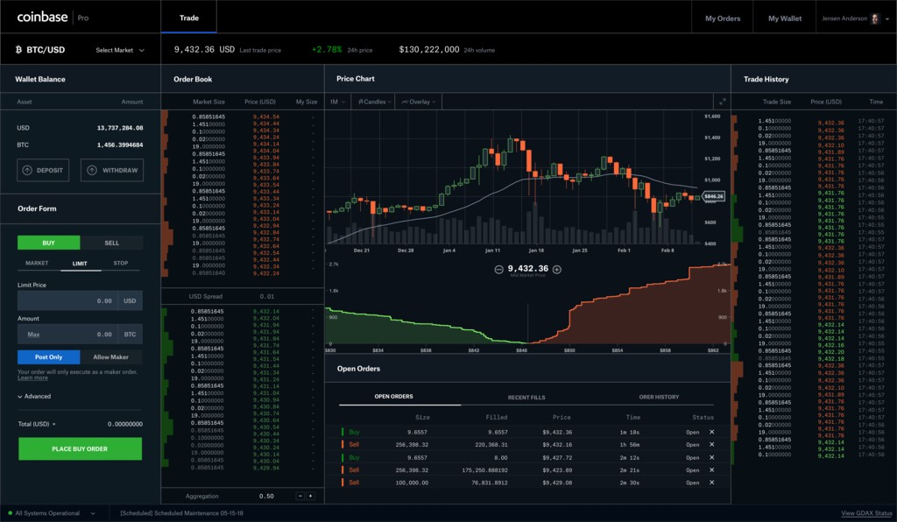
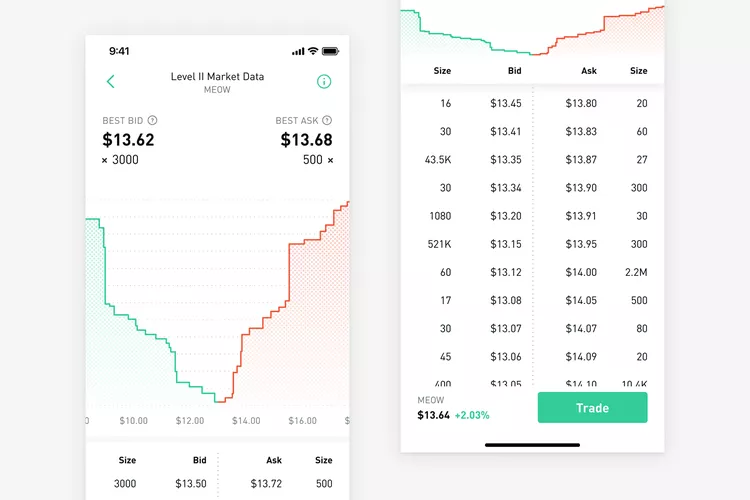
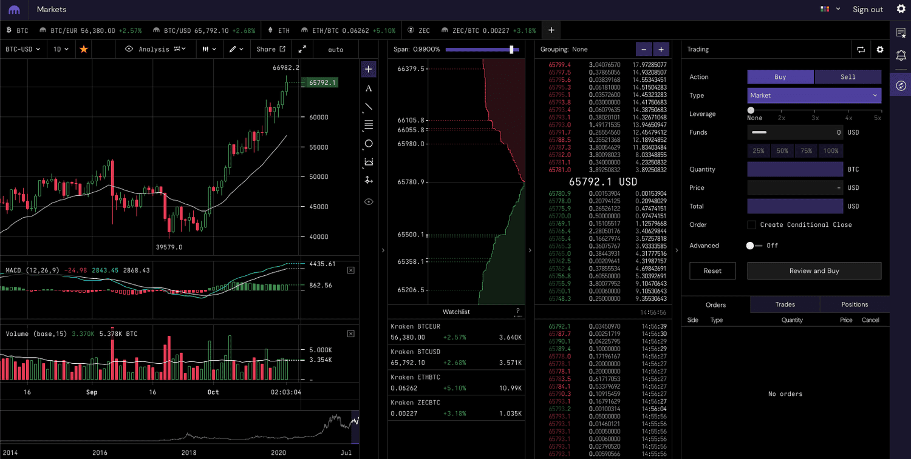
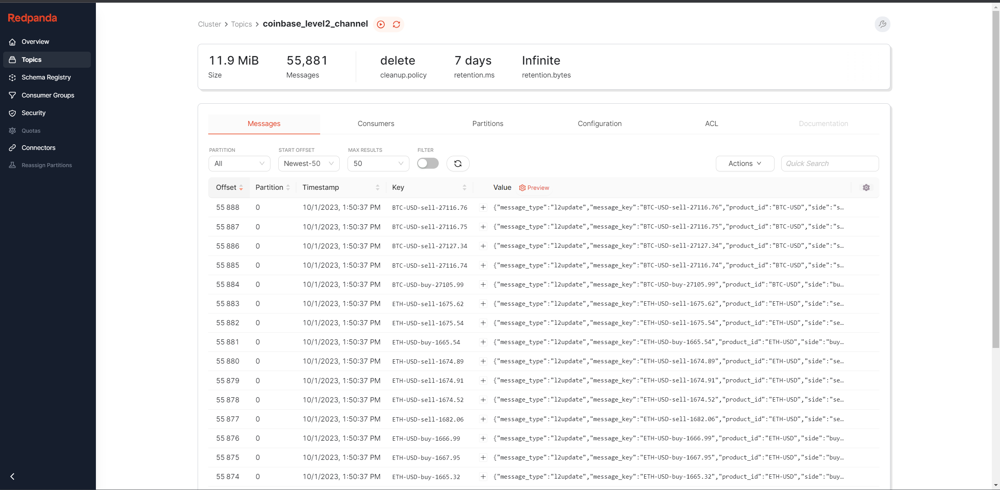

My experience building a real-time data pipeline to visualize Coinbase order book depth, highlighting the seamless integration of Redpanda, Materialize, dbt, and Streamlit.
Author
Tyler Hillery
Published
October 1, 2023
Introducing “Tyler Tries”
This blog kicks off a new series I am calling “Tyler Tries” where I write about the topics I am learning about. We are going to start the series off with my experience building a real-time data pipeline to visualize Coinbase order book depth.
TL;DR
I built a real-time dashboard that visualizes Coinbase order book depth powered by Redpanda + Materialize + dbt + Streamlit you can view the code here. The data comes from the free Coinbase WebSocket feed using the level2_batch channel.
Introduction
I posted the above video on Twitter/X and several people requested a blog post about how it all works. It may come as a bit of a surprise but it wasn’t all too difficult. This is coming from someone without any prior experience dealing with real-time data and who has never used Redpanda or Materialize before. Funny enough, the part I struggled with most was pandas dataframe styling and creating an unstacked area chart (it turns out most python plotting libraries assume your area chart will be stacked).
Historically, real-time data was hard to manage. We’ve come a long way since then. If you look at the various components of the modern streaming stack the biggest thing slowing people down from building real-time data pipelines are the sources. Besides CDC feeds, very rarely are there event-driven APIs that allow for the consumption of the source data in real time.
This is why I got so excited when I came across this guide from bytewax: Real-Time Financial Exchange Order Book. It’s how I discovered the free Coinbase WebSocket feed which displays their level 2 order book data. Using this data I thought it would be fun to recreate a common visual to display exchange depth.
Coinbase Pro

Robinhood

Kraken

These visuals illustrate the cumulative size, indicating the quantity of a security someone is willing to buy or sell at a specific price level. This information is valuable as it can address questions such as, “At what price should I place my order to ensure it gets fully filled if I aim to buy or sell 100 quantities”
The pipeline will work as follows:
Create a KafkaProducer to send the data from the Coinbase WebSocket and add it to a Redpanda topic.
Ingest the Redpanda topic into Materialize using dbt to manage the transformations.
Connect Streamlit to Materialize with psycopg2 to visualize the data.
Ingestion
The first step in this pipeline involves creating a KafkaProducer that will take the data from the Coinbase WebSocket and add it to a Redpanda topic.
To start ingesting data from Coinbase we submit an initial request to the WebSocket channel like so:
To process these messages within the KafkaProducer I’ve created an infinite while loop that will keep running until the program is stopped.
Code
whileTrue: message = ws.recv() data = json.loads(message)if data["type"] =="snapshot": asks = [{"message_type": "snapshot","message_key": data["product_id"] +"-sell-"+str(order[0]),"product_id": data["product_id"],"side": "sell","price": order[0],"size": order[1],"message_created_at_utc": format_datetime(data["time"]) } for order in data["asks"] ] bids = [{"message_type": "snapshot","message_key": data["product_id"] +"-buy-"+str(order[0]),"product_id": data["product_id"],"side": "buy","price": order[0],"size": order[1],"message_created_at_utc": format_datetime(data["time"]) } for order in data["bids"] ] order_book = asks + bidsfor order in order_book: prod.send( topic="coinbase_level2_channel", key=order["message_key"].encode("utf-8"), value=json.dumps(order,default=json_serializer,ensure_ascii=False).encode("utf-8") )print(order) #log prod.flush()elif data["type"] =="l2update": orders = [{"message_type": "l2update","message_key": data["product_id"] +"-"+ order[0] +"-"+str(order[1]),"product_id": data["product_id"],"side": order[0],"price": order[1],"size": order[2],"message_created_at_utc": format_datetime(data["time"]) } for order in data["changes"] ]for order in orders: prod.send( topic="coinbase_level2_channel", key=order["message_key"].encode("utf-8"), value=json.dumps(order,default=json_serializer,ensure_ascii=False).encode("utf-8") )print(order) #log prod.flush()else:print(f"Unexpected value for 'type': {data['type']}")
Redpanda Console
The Redpanda Console provided a nice UI to peer into how the Redpanda instance is operating. If you haven’t used the Redpanda Console, it’s described as:
A Kafka web UI for developers.
Redpanda Console gives you a simple, interactive approach for gaining visibility into your topics, masking data, managing consumer groups, and exploring real-time data with time-travel debugging1.

The console helped me identify a bug in my original code. The unique key I was making for each record was a combination of the product_id, side, & price e.g. BTC-USD-buy-10000. The problem was for the snapshot messages I was using the terms bid and ask but for the l2update messages I was using buy and sell. This was important to fix because the data was being inserted into Materialize via the ENVELOPE UPSERT based on this key.
Materialize & dbt
The next step in our pipeline entails processing and storing the real-time data. Materialize is a streaming database that allows for just that. It has integrations with Kafka and since Redpanda is compatible with Kafka APIs, Materialize and Redpanda work together out of the box.
A key thing to understand about Materialize is how it handles materialized views. Their MVs are incrementally maintained so as the underlying data changes the MV automatically updates. This is why when you use Materialize and dbt together you’ll typically set up dbt to only run in a CI/CD pipeline which is kicked off when changes occur to the dbt models. If you want to learn more about how this works I highly recommend checking out this video on Materialize+dbt Streaming for the Modern Data Stack.
{{ config(materialized='source') }}CREATESOURCE {{ this }}FROM KAFKA BROKER 'redpanda:9092' TOPIC 'coinbase_level2_channel'KEY FORMAT BYTESVALUE FORMAT BYTESENVELOPE UPSERT;
The ENVELOPE UPSERT treats all records as having a key and a value, and supports inserts, updates and deletes within Materialize2:
If the key does not match a preexisting record, it inserts the record’s key and value.
If the key matches a preexisting record and the value is non-null, Materialize updates the existing record with the new value.
If the key matches a preexisting record and the value is null, Materialize deletes the record.
The staging model does some light transformations to get the data into a more usable form.
stg_coinbase_level2_channel
{{ config( materialized='materializedview' ) }}withsource as ( select *from {{ source('coinbase', 'level2_channel') }}),converted as ( select convert_from(data, 'utf8') as data from source),casted AS ( select cast(data as jsonb) as data from converted),renamed as ( select (data->>'message_type')::string as message_type, (data->>'message_key')::string as message_key, (data->>'product_id')::string as product_id, (data->>'side')::string as side, (data->>'price')::double as price, (data->>'size')::double as size, (data->>'message_created_at_utc')::timestamp as message_created_at_utcfrom casted),final as ( select message_type, message_key, product_id, side, price, size, price * size as notional_size, message_created_at_utcfrom renamed where size !=0)select *from final
Because Materialize does not handle window functions very well they provided some alternative approaches in their docs. I referenced the Materialize Top K by group that allowed me to return the top bid and ask record for each product id. The highest bid and lowest ask is referred to as the national best bid and offer (NBBO).
int_coinbase_nbbo
{{ config( materialized='materializedview' ) }}withstg_coinbase_level2_channel as ( select *from {{ ref('stg_coinbase_level2_channel') }}),nbb as ( select distinct on(product_id) product_id, side, price, size, notional_size, message_created_at_utcfrom stg_coinbase_level2_channel where side ='buy' order by product_id, price desc),nbo as ( select distinct on(product_id) product_id, side, price, size, notional_size, message_created_at_utcfrom stg_coinbase_level2_channel where side ='sell' order by product_id, price asc),unioned as ( select *from nbb union all select *from nbo)select *from unioned
The last model I created was the fct_coinbase_nbbo which pivots the NBB and NBO so there is only one record per product_id. This allows for the calculation of the NBBO spread and NBBO midpoint. The spread is the difference between the NBB and NBO. The NBBO midpoint is usually used as the reference price for the current market value of a security.
fct_coinbase_nbbo
{{ config( materialized='materializedview' ) }}withint_coinbase_nbbo as ( select *from {{ ref('int_coinbase_nbbo') }}),nbbo as ( select product_id,max(case when side ='buy' then price end) as nbb_price,max(case when side ='buy' then size end) as nbb_size,max(case when side ='buy' then notional_size end) as nbb_notional_size,max(case when side ='buy' then message_created_at_utc end) as nbb_last_updated_at_utc,max(case when side ='sell' then price end) as nbo_price,max(case when side ='sell' then size end) as nbo_size,max(case when side ='sell' then notional_size end) as nbo_notional_size,max(case when side ='sell' then message_created_at_utc end) as nbo_last_updated_at_utcfrom int_coinbase_nbbo group by product_id),final as ( select product_id, nbb_price, nbb_size, nbb_notional_size, nbb_last_updated_at_utc, nbo_price, nbo_size, nbo_notional_size, nbo_last_updated_at_utc, (nbb_price + nbo_price) /2as nbbo_midpoint, nbo_price - nbb_price as nbbo_spreadfrom nbbo)select *from final
TODO: Something I want to work on in the future is creating a model that provides the cumulative size. Normally a window function is what I would use to get the cumulative sum of something but window functions don’t work well with Materialize. My theory is that I can do a self-join on the product_id, side, and price where the price is >= the current price (or <= depending on the side) and then sum up the size.
Streamlit
Streamlit has been my go-to lately when I want to display a side project I’ve been working on. Because Materialize speaks the Postgres wire protocol I can leverage psycopg2 to connect to Streamlit.
Currently, I am using a polling technique based on the refresh_interval that is set by the st.slider and defaults to 1 second. I use a package called streamlit_autorefresh that handles refreshing the Streamlit app.
TODO: I would like to switch this polling technique to a push model so the data is sent directly to Streamlit as it comes in. Shout-out to the Materialize team for whipping up a demo for me on how to do this!
Conclusion
Increasingly, individuals and organizations are discovering use cases for analytical data that have different standards than traditional OLAP data workflows, often venturing into what’s known as “Operational Analytics.” Coming from an ops background, I’ve seen firsthand how operational processes can get caught up in mundane data tasks. This is where data teams can step in, alleviating this burden, allowing focus to shift to higher-value problems.
The evolution of tooling and technology surrounding real-time data has significantly eased the prior complexity. In the past, the cost and effort required to establish the necessary infrastructure were deterrents. However, times have changed. I firmly believe real-time isn’t just the future; it’s the present.
Other TODOs
Utilize the Materialize SUBSCRIBE along with materializing dbt tests as MVs to create alerts on:
NBBO spread gets too wide
Price alerts
If the change of the size for a specific price level goes down we can use it as a proxy for executed volume and display those records as a table.